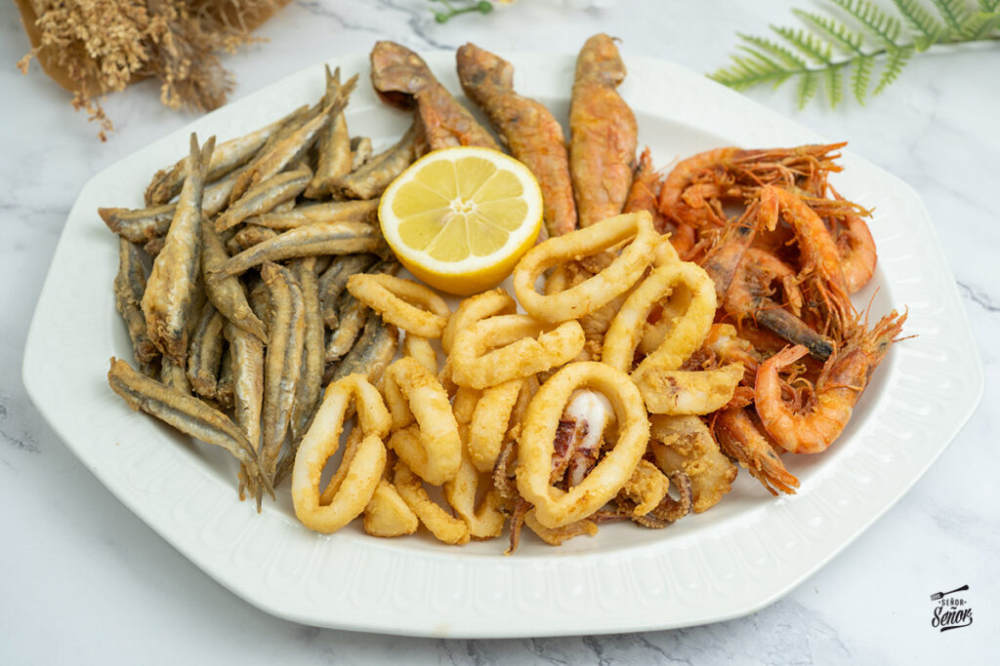

Pescaíto Frito Andaluz
Un clásico de la cocina andaluza: pescado crujiente por fuera y tierno por dentro.

Ingredientes
- 500 g de pescado variado (boquerones, calamares, acedías)
- Harina de trigo o harina especial para freír
- Abundante aceite de oliva para freír
- Una pizca de sal
- Limón (opcional)
Pasos
- Lava y limpia bien el pescado, y sécalo con papel de cocina.
- Añade una pizca de sal al pescado.
- Pasa el pescado por la harina y sacude el exceso con un colador.
- Calienta abundante aceite en una sartén a fuego alto.
- Fríe el pescado en tandas pequeñas durante 2 o 3 minutos hasta que esté dorado.
- Saca el pescado y déjalo escurrir sobre papel absorbente antes de servir.